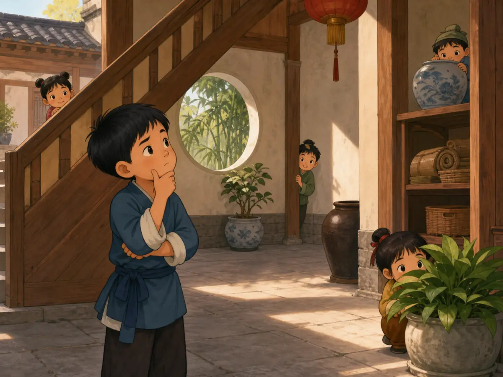
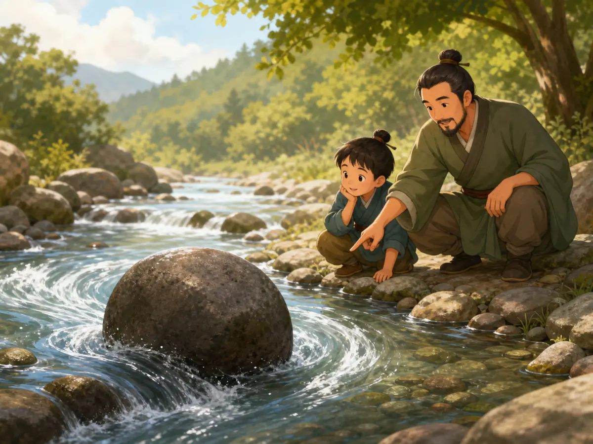

《孙子兵法》：行动之前，先看清局面
The Art of War: Look Before You Move
Page 1
捉迷藏为什么不只比谁跑得快？
Why Is Hide-and-Seek About More Than Speed?

Hide-and-seek is a modern way to think about observing before acting. It is not a small version of war.
想象一场捉迷藏。找人的孩子跑得飞快，却不知道房子后面还有一道小门；另一个孩子跑得不快，却先看过院子的角落，也记得朋友们喜欢躲在哪里。谁更可能先找到人？
这个游戏可以帮助我们理解《孙子兵法》的一个习惯：行动以前，先收集信息、比较条件、判断变化。不过，捉迷藏终究只是大家同意参加的游戏，战争却会让人受伤、死亡，也会毁掉家园。《孙子兵法》开头就说：“兵者，国之大事，死生之地，存亡之道，不可不察也。”大意是，战争关系到国家存亡和人的生死，绝不能不认真研究。
所以，这本书不是在教孩子怎样“赢过所有人”。它记录的是古代军事思想，讨论国君和将领怎样在极其危险的局面中判断、准备和行动。我们今天可以研究其中的观察方法，同时也要记住它原来的战争背景。
Imagine a game of hide-and-seek. One seeker can run very fast, but does not know about the little gate behind the house. Another seeker is slower, but has studied every corner of the yard and remembers where each friend likes to hide. Who is more likely to find everyone first?
This game can help us understand one habit in The Art of War: before you act, gather information, compare the conditions, and watch for change. But hide-and-seek is a game that everyone agrees to play. War kills and injures people and can destroy their homes. The opening of The Art of War says that war is a matter of life, death, survival, and ruin, so it must be studied with great care.
This book was not written to teach children how to “beat everyone.” It is an ancient work of military thought about how political leaders and military commanders prepared and made choices in dangerous situations. We can study its way of observing a problem while remembering that its original subject was war.
Page 2
“孙子”究竟是谁？
Who Was “Master Sun”?
《孙子兵法》传统上被认为出自孙武。“子”在这里是对老师或思想家的尊称，因此人们也叫他孙子。生活在孙武传说年代几百年后的历史学家司马迁，写下了孙武为吴王训练军队的故事，并说他有十三篇兵法。
但这不是孙武生活时代留下的现场记录。现代学者对孙武是否确有其人、书中哪些部分形成于什么时候，仍有不同看法。一些研究者认为，今天看到的《孙子兵法》更可能在战国时代逐渐形成，汇集并整理了一个军事思想传统，而不是一个人在某一天从头写到尾。
1972年，考古学家在中国东部的沿海省份。看中国地图时，山东有一块半岛伸进黄海；北京在它的西北方向，上海在它的南边。临沂的银雀山西汉墓中发现了写在竹片上的《孙子兵法》和《孙膑兵法》。这些竹简说明，早在两千多年前，两部名称相近却不同的兵书已经同时流传。它们证明古老文本确实存在，却不能替我们回答关于孙武本人和每一章作者的所有问题。
Tradition connects The Art of War with a man named Sun Wu. The word zi in Sunzi is a respectful title for a teacher or thinker, so the name means “Master Sun.” The historian Sima Qian, writing centuries after the time when Sun Wu was said to have lived, told a story about Sun Wu training troops for the king of Wu. He also said that Sun Wu had written thirteen chapters on warfare.
That account is not an eyewitness record from Sun Wu’s lifetime. Scholars still disagree about whether Sun Wu was a clearly identifiable historical person and when different parts of the book took shape. Many researchers think the work grew during the Warring States period out of a larger tradition of military teaching. It may not have been written from beginning to end by one person at one time.
In 1972, archaeologists opened an early Han dynasty tomb at Yinqueshan in what is now A coastal province in eastern China. On a map, its peninsula reaches into the Yellow Sea; Beijing is northwest of it, and Shanghai is farther south. Province. Inside were bamboo strips carrying parts of both The Art of War and a different book called Sun Bin’s Art of War. The discovery shows that these two similar-sounding works circulated separately more than 2,000 years ago. It proves that the old texts existed, but it cannot answer every question about Sun Wu or the writer of each chapter.
Page 3
还没出发，先在桌上比较
Compare Before You Set Out

This is an imagined teaching scene, not a historical record of Sun Wu or an ancient classroom.
想象一张摆着山、河、道路和小旗的地图。真正行动之前，先要问：路有多远？天气怎样？哪里容易通过，哪里会把人困住？队伍有没有食物和训练？命令能不能传清楚？
《孙子兵法》第一篇把战争称为必须认真“察”的大事，接着要求比较多方面条件。书中用“道、天、地、将、法”五个字来整理问题，包含人心是否一致、天气与时机、地形远近险易、将领能力以及军队的组织和规则。这里没有一句“只要勇敢就够了”。勇气如果离开信息、准备和判断，反而可能把许多人带进危险。
这张桌上地图是配图画出的想象场面，不是孙武授课的历史照片。它让我们看见《孙子兵法》的思考顺序：先比较，再决定；先问代价，再问能不能做。
Picture a table covered by a model of mountains, rivers, roads, and small flags. Before anyone moves, there are questions to ask. How long is the road? What is the weather like? Which ground is easy to cross, and which ground could trap an army? Does the army have food and training? Can its leaders give clear orders?
The first chapter of The Art of War says that war must be carefully examined. It then compares many conditions under five headings: the people’s unity, weather and timing, the shape and distance of the land, the commander’s ability, and the army’s rules and organization. Nowhere does the book say, “Courage is all you need.” Courage without information, preparation, or judgment can lead many people into danger.
The model map in the picture is an imagined scene, not a photograph of Sunzi teaching a student. It helps us follow the book’s reasoning: compare before deciding, and ask about the cost before asking whether something can be done.
Page 4
“知彼知己”不是胜利保证书
“Know the Other Side and Yourself” Is Not a Guarantee
《孙子兵法》第三篇有一句非常有名的话：“知彼知己，百战不殆。”这里的“彼”是对方，“己”是自己，“殆”更接近危险。整句话不是说掌握一点资料就能一百次全胜，而是说，了解双方条件，反复作战也不容易陷入危险。
而且，“知彼知己”不是猜测对方心里在想什么。书中刚刚列出的判断包括什么时候能战、什么时候不能战，怎样面对人数不同的队伍，自己是否准备好，对方是否没有准备。所谓“知”，需要观察、比较和可靠信息。
把它放进球赛，可以得到一个有限的现代例子：球队要知道自己的体力、配合和弱点，也要研究对方的打法与场地。但球赛有规则和裁判，战争没有这样安全的边界。这个例子只能帮助理解“准备”，不能把比赛和战争说成同一回事。
Chapter 3 contains the book’s most famous line: “Know the other side and know yourself; through a hundred battles, you will not be in danger.” The Chinese word often translated as “danger” does not mean “you are guaranteed to win.” The phrase is about avoiding peril again and again because you understand the conditions on both sides.
Knowing the other side does not mean guessing what someone is thinking. The lines just before this one ask whether a commander knows when to fight and when not to fight, how to handle forces of different sizes, and whether one side is ready while the other is unprepared. Knowledge must come from observation, comparison, and dependable information.
A sports team gives us one limited modern example. Players should know their own energy, teamwork, and weak points, and they should study the other team’s style and the field. Yet sports have agreed rules and referees. War does not have the same safe boundaries, so the comparison helps us understand preparation without pretending that a game and a war are the same thing.
Page 5
为什么最高明的办法不是攻城？
Why Is Attacking a Walled City the Worst Choice?

Children studying the pieces are a modern symbol of thinking before moving, not a scene recorded in the ancient book.
同一篇里还有一句：“不战而屈人之兵，善之善者也。”前一句先说，即使每战都胜，也不算最高明。接着，书中把破坏对方计划放在攻击军队之前，把攻打有城墙的城市放在最下策，因为长期围城会消耗器械、时间和士兵的生命。
因此，“不战”并不是一条温柔的口号，也不等于双方成为朋友。它仍然处在战争语境中，目标仍是让对方屈服，只是尽量不进入代价巨大的正面战斗。这个区别很重要：我们可以看见书中对损失和代价的计算，却不能把古代军事强迫包装成现代校园里的友善合作。
配图中，孩子们围着桌上的木片先想办法，是一个现代象征。它提醒我们，动手前多想一步常能减少浪费；它不是《孙子兵法》里发生过的故事，也不表示对朋友使用欺骗就是聪明。
The same chapter says that winning every battle is not the highest skill. “To make the enemy submit without fighting,” it says, is better. The chapter ranks breaking the enemy’s plans ahead of attacking its army. It puts a siege of a walled city last because a long siege can consume equipment, time, and soldiers’ lives.
“Without fighting” is not a gentle promise that both sides will become friends. The goal is still to force an enemy to give in. The book is weighing how to avoid the cost of a direct clash, not teaching modern peacemaking. That difference matters. We can notice its concern with loss without dressing up ancient military pressure as friendly teamwork.
The picture of children studying wooden pieces is a modern symbol. It suggests that thinking before moving can prevent waste. It is not a scene from The Art of War, and it does not mean that tricking friends is a clever way to solve everyday problems.
Page 6
水教的不是“永远绕路”
Water Does Not Mean “Always Go Around”

The stream shows how water follows the land. The figures are imagined, not historical portraits of Sun Wu.
第六篇把军队的变化比作水：“水因地而制流，兵因敌而制胜。”水流经过山谷、斜坡和石块，会随着地形改变方向；军事行动也不能永远照搬同一个办法，而要根据对方和局面的变化调整。书中还用“避实而击虚”说明，不要硬撞对方防守最坚固的地方，而要寻找没有充分防备之处。
配图里的大石头和溪流很适合帮助我们看见“因地制流”，但它不是一段关于孙子带孩子看水的历史记载。原文也没有说水从不使用力量、一定流进大海，或任何东西都挡不住水。水的比喻只有在边界清楚时才有用：重点是没有固定形状，能够随着条件改变。
现代生活中，我们也可以问：“原来的方法卡住了，我能不能换一种？”但改变方法不等于不守规则，也不等于为了赢可以隐瞒或欺骗身边的人。军事策略进入普通生活以前，需要先经过道德和规则的检查。
Chapter 6 compares an army’s changing shape with water. Water follows the land as it flows. In the same way, a plan must change with the opponent and the situation. The text says to avoid a place where the enemy is solid and prepared and to move toward a place that is open or weak.
The stream and boulder in the picture make that idea easy to see, but they are not part of a historical story in which Sunzi taught a child beside a river. The original text does not say that water never uses force, that nothing can stop it, or that it must always reach the sea. Its point is narrower and more useful: water has no single fixed shape because the ground keeps shaping its path.
In everyday life, we might ask, “My first method is stuck. Can I try another?” But changing methods does not mean breaking rules or hiding the truth from people around us. A military strategy needs an ethical check before anyone carries it into friendship, school, or family life.
Page 7
将领也可能败给自己的性格
A Commander Can Be Trapped by Character
《孙子兵法》第八篇列出将领的“五危”：只顾拼命、只顾保命、容易被激怒、过分怕受辱，以及过度顾惜士兵而受到牵制。不同译者对最后几项的说法不完全一样，但核心提醒很清楚：性格如果走向极端，就可能被对方利用。
这不是说勇敢、珍惜生命、重视名誉或关心士兵本身有错。问题在“只能这样，不能调整”。鲁莽的勇气可能冲进埋伏，恐惧可能让人什么也不敢决定，怒气可能让人按照对方希望的方向行动。一本强调了解对手的书，也要求将领诚实地检查自己。
不过，《孙子兵法》并不是一本普通的情绪管理书。它还讨论欺骗、间谍、火攻和进军，服务的是古代战争。只摘出几句放在海报上，会让这本书显得比实际内容温和，也会错过它最严肃的问题：当决定牵涉许多人的生命时，领导者怎样面对信息、代价和责任？
Chapter 8 lists five dangers for a commander: recklessness, fear for one’s own life, a temper that can be provoked, honor that cannot bear shame, and concern for soldiers that can be used against the leader. Translators explain some of these lines differently, but the warning is clear. A trait pushed to an extreme can become a handle for an enemy to grab.
The book is not saying that courage, safety, honor, or care for soldiers are bad. The danger appears when a leader can respond in only one way. Reckless courage can rush into a trap. Fear can freeze a decision. Anger can make a commander move exactly where the enemy wants.
Still, The Art of War is not an ordinary book about managing emotions. It also discusses deception, spies, fire attacks, and troop movements because it was made for ancient warfare. Pulling out a few wise-sounding lines can make the book seem gentler than it is. Its hardest question is also its most serious one: when a decision can cost many lives, how should a leader face information, risk, and responsibility?
再回到那场捉迷藏
Return to the Game
两千多年以前，有人把这部兵书抄在一条条竹片上；今天，我们能在屏幕和纸书上读到它。文本流传了很久，关于作者的答案却没有因此变得简单。考古发现、古代记载和现代研究要放在一起看，才能知道什么比较确定，什么仍然有争议。
现在再想那场捉迷藏。真正值得带走的，不是怎样骗过朋友，而是行动前的几个问题：我知道什么？我还不知道什么？如果判断错了，谁会付出代价？有没有损失更小的办法？
《孙子兵法》不会替今天的每件事给出答案。它更像一张古老的警告牌：局面越危险，越不能只靠冲动向前跑。
More than 2,000 years ago, a copyist brushed words from this military classic onto narrow strips of bamboo. Today, we can read the work on paper or a screen. The text has traveled a long way, but the history of its author has not become simple. Ancient records, archaeology, and modern scholarship must be read together so we can separate strong evidence from open questions.
Now return to that game of hide-and-seek. The lesson worth carrying away is not how to fool your friends. It is a set of questions to ask before moving: What do I know? What do I still need to learn? If my judgment is wrong, who will pay the cost? Is there a path that causes less harm?
The Art of War cannot answer every modern problem for us. It is more like an ancient warning sign: the more dangerous the situation, the less we can afford to run forward on impulse.